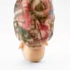
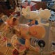

Cumulous Brand
-
Cumulous Brand, Beatrice
inkjet print
30 x 45 in & 40 x 60 in -
Cumulous Brand, Sebastian in the Park
inkjet print
25 x 17 in & 44 x 30 in 
Cumulous Brand, Sabine Sitting Up
inkjet print
30 x 45 in & 40 x 60 in
Mark Fainstein - Initial Studio Photography-
Cumulous Brand, Sabine & Sebastian
inkjet print
30 x 45 in & 40 x 60 in
Mark Fainstein - Initial Studio Photography -
Cumulous Brand, Sebastian as Auntie Gretchen
inkjet print
30 x 45 in & 40 x 60 in
Mark Fainstein - Initial Studio Photography -
Cumulous Brand, Sebastian as Grandma Sue
inkjet print
30 x 45 in & 40 x 60 in
Mark Fainstein - Initial Studio Photography -
Cumulous Brand, Claudia, Beatrice & Sebastian
inkjet print
30 x 27 in & 40 x 50 in -
Cumulous Brand
silicone & foam
14 x 12 x 7 in
Barb Wegner - clay modeling -
Untitled
dirt, resin, & fiberglass
6 x 7 x 4 ft -
Cumulous Brand, Sebastian As Grandma Susan
silicone, human hair, glass eyes & foam
17 x 15 x 10 in -
Cumulous Brand, Sebastian As Grandma Susan, Back
silicone, human hair, glass eyes & foam
17 x 15 x 10 in -
Cumulous Brand, Bill
silicone & urethane
12 x 8 x 8 in
Julia Ambrose, Tool Mark Studio - Clay Modeling -
Cumulous Brand, Bill
silicone & urethane
12 x 8 x 8 in
Julia Ambrose, Tool Mark Studio - Clay Modeling - 
Cumulous Brand, Bill
silicone & urethane
12 x 8 x 8 in
Julia Ambrose, Tool Mark Studio - Clay Modeling -
Studio Shot
- 
Studio Shot